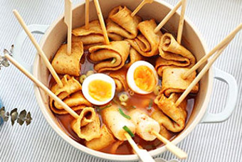

7:25
7:25

 8:25
8:25
한국주택금융공사


안심전환대출로 금리고정! 행복고정!
안심전환대출로 금리고정! 행복고정!
조기상환수수료도 없이 최저 3.7% 환승
준법경영부 광고심의편(2022-0043, 2022.8.5)
더알아보기>

레시피
어묵전 부치기 냉장고 파먹기 만든 집에서 간단한 술안주
요즘 요리를 하다보니 이것저것 남은것이 많네요. 어묵도 어정쩡하게 남았고, 짜투리채소도 넘 많고요. 그래서 냉장고 파먹기도 할겸 남은 채소와 어묵으로 어묵전을 부쳤어요
그래서 맛있는 요리가 완성 되었답니다 ㅎㅎ
철든철부지 ·2주일 전

레시피
라이스페이퍼요리 치즈어묵꼬치 사각어묵요리 집에서 맥주안주 만드는법
라이스페이퍼요리 치즈어묵꼬치 사각어묵요리 집에서 맥주안주 만드는법 몇일 전 인스타를 보다가 추전 피드에서 만들기는 간단하지만 맛있어 보이는 라이스페이퍼요리를 봣는데 너무 맛이 있었어요
여러분도 만들어 보세요 ㅎㅎ
초대리 ·3일 전
레시피
박나래 어묵탕 끓이는법 소주안주 꼬치 어묵탕 레시피 매운어묵탕
박나래 어묵탕 끊이는법 소주안주 꼬치 어묵탕 레시피 매운 오뎅탕 끓이는법 사각어묵10장 가래떡 2줄 대파 썰은것 (1~2) 삻은달걀 1개 멸치 칼국수 라면 스프 2/3봉지 꽃게탕면 레시피 입니다
여러분도 만들어 보세요 정말 맜있습니다
은솔희섭mom·1개월 전
레시피
새송이버섯 버터 양념구이 술안주 요리(편스토랑 박솔미 레시피)
냉장고에 고기 구워 먹고 남은 새송이버섯. 평소 같으면 대충 썰어서 볶아 반찬으로 먹는 새송이버섯볶음을 만들었을 텐데 요즘 집에서 밥 먹는 일이 별로 없어 간단하게 먹을 술 안주가 필요 했는데 여러분들에게도
추천 합니다 맜있는 버섯구이에요
백설기껌딱지 ·1개월 전